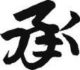

16. yüzyılda Japonya’yı Hıristiyanlık ile tanıştıran Cizvit papaz Francis Xavier, Japon alfabesini gördüğünde şu yorumu yapmış: “Japonlar kutsal kitabı (İncil) okuyamasın diye şeytan tarafından icat edilmiş bir alfabe.” Japoncanın mucidi gerçekten şeytan mıdır bilmiyorum ama, Japonca da Türkçe gibi Ural-Altay dil grubundan (ve dahi Korece, Moğolca, Fince, Macarca) geliyor. Dolayısıyla, dilbilgisi açısından Türkçeye çok benziyor; en azından cümle öğelerinin dizilimi aynı. İki dil arasında cümleyi soru haline getirme, olumsuzluk anlamını cümlenin en sonunda vurgulama gibi birçok benzer özellikler var.
Dillerin benzer yapısı bazı toplumsal tavır ve davranışları da etkiliyor. Örneğin, Türkçe ve Japoncada cümlenin olumlu veya olumsuz anlam taşıyacağını son ana kadar kestiremiyorsunuz. Konuşan da gidişata göre karar değiştirebiliyor, yanmaması için kazı çevirebiliyor veya lafı evirip çevirip zaman kazanabiliyor. İngilizcede ise, cümlenin niyeti en baştan belirtildiğinden daha kısa ve öz cümlelerle konuşulabiliyor, konuya direk girerek meramınız anlatılabiliyor. Dilbilgi kurallarının benzerliği sayesinde Japonlar da Türkler gibi, ve benim şimdi yaptığım gibi, uzun ve anlamsız muhabbetlere girebiliyor.
Bu ortak payda sayesinde Japonlar Türkçeyi, Türkler Japoncayı diğer dillere nazaran daha rahat ve akıcı bir şekilde öğrenebiliyorlar. Gene de Japonca Türkçeye göre bazı açılardan daha sade bir dil denilebilir; en azından Türkçe kadar bitişken değil, kelimeler bizdeki kadar peş peşe ek almıyor. Bunun bir sebebi, Japoncada Türkçedeki kadar zaman kipi olmaması. Japoncada iki zaman kipi var: geçmiş zaman ve şimdiki-geniş-gelecek zaman. Japonlar bizdeki -di’li geçmiş, -miş’li geçmişleri, İngilizlerin envai çeşit zaman kiplerini duyunca bön bön bakıyorlar.
Aslında zaman kiplerinin azlığı sayesinde günlük hayatta kullanabileceğiniz kadar Japonca öğrenmek çok zor değil (Tabii okuyabilmeyi ya da yazabilmeyi değil, sadece konuşabilmeyi kastediyorum). Japoncada asıl sorun zaman kipleri değil, konuşmanın ne derece resmi veya nazik olduğu... Japoncada günlük konuşma diline ek olarak, kibar üslup, daha kibar üslup, daha da kibar üslup ve oha dedirtecek derecede kibar üsluplar bulunuyor ki bir noktadan sonrasını ortalama Japonlar da konuşamıyor. Örneğin bir prensin İmparatora hitaben konuşmasını anlayabilecek Japonun alnını karışlarım.
Japon kültürü gibi, Japonca da daha çok simgelere dayandığı için, ne yaptığınız değil, nasıl yaptığınız; ne dediğiniz değil, nasıl dediğiniz daha önemli. Bir Japon, çalıştığı şirkette kendisi ile aynı seviyedeki arkadaşı ile farklı bir Japonca, şefi ile daha farklı bir Japonca, genel müdürü ile ayrı, yönetim kurulu başkanı ile apayrı bir Japonca konuşmak zorundadır. Türkçedeki gibi cümleye “siz...” diye başlamakla olay çözülmez; ve Japon sosyal hiyerarşisi hitapta hata affetmez. Hiyerarşide sizden aşağıdaki birisiyle kibar üslupla konuşursanız, nezaket göstermiş değil, “hata yapmış” sayılırsınız. Bu bakımdan Japonların dili, kültürü ve yaşantıları birçok paralellikler gösteriyor ve bir bakıma kuru soğana benziyor. Nasıl ki bir geyşanın kimonosu yedi katmandan oluşuyorsa, dilleri, sanatları, gündelik hayatları da iç içe birçok katmandan oluşuyor. Ortadaki “cücüğe” ulaşmak ise imkânsız; hele ki bir yabancı için.
Çince, Japoncadan çok farklı bir dil; ancak alfabede aynı sembol karakterlerini (kanjileri) kullandıkları ve sembollerin anlamları genelde aynı olduğu için, bir Çinli konuşulan Japoncayı anlamasa da Japonca bir metinde ne dendiğini az çok tahmin eder. Japoncayı Çinceden ayıran kendine özgü alfabesi ise hiragana. 45 ana karakterden oluşuyor, birtakım inceltme işaretleri ve sembollerin yan yana kullanılması ile bu sayı 80 civarına ulaşıyor. Hiragananın 9. yüzyılda kadınların da okuyup yazabilmesini sağlamak için icat edildiği söyleniyor.
Hiraganayı “icat” eden Kobo Daishi adlı halk kahramanı Budist rahibin amacı sadece “kadınların” okuyabilmesi değilmiş. Uzun süre Çin’de kalıp Budizmin shingon dalında yüksek lisansını tamamlayan Kobo Daishi, mecburi hizmet için memlekete döndüğünde “Japonya’ya özgü Budizmi” geliştiren kişi olarak biliniyor. Amacı, Budizmi soyluların ve erkeklerin egemenliğinden çıkarıp halka yaymakmış; örneğin, kadınların da nirvanaya ulaşabileceğini iddia ediyormuş (Daha önceki iddia, bir kadının ancak öldükten sonra erkek olarak dünyaya gelmesi halinde nirvanaya ulaşabileceği imiş).
Kobo Daishi, dinle beraber eğitimi de “halk”a yaymak istemiş ve Japonya’nın ilk özel okulunu kurmuş; burada her isteyen (erkek veya kadın) öğrenim görebiliyormuş. Üstat aynı zamanda Japonların onsen denilen kaplıcalarından faydalanmayı, halkın yaşamını kolaylaştıracak yol, köprü gibi altyapı çalışmalarını ve mühendislik uygulamalarını teşvik etmiş, bir anlamda Japonya’nın modernleşme sürecine girişini hızlandırmış. Üstüne üstlük bu olaylar 9. yüzyılda gerçekleşmiş...
Halen ileri derecede erkek egemen bir toplum olan Japon-ya’da konuyu alaycı ve eleştirel bir tarzda ele alanlar, “Adam başımıza basit bir alfabe çıkardı, şimdi kadın kısmısı da okumayı öğrenebilecek, başımıza ulema kesilecek” değerlendirmesi ile hiraganaya “kız tavlası” muamelesi yapmışlar. Ama dedikleri de bir anlamda gerçekleşmiş; kanji karakterleri öğrenmenin ağırlığından sıyrılıp hiragana ile duygularını çabucak ifade etmeyi öğrenen kadınlar, erkeklerden daha fazla sayıda şair, yazar çıkarmaya başlamış. Örneğin, 11. yüzyılda yaşayan Murasaki Shikibu Genji’nin Hikâyesi isimli romanıyla piyasayı allak bullak etmiş. Birçok edebiyatçı tarafından “dünyada yazılan ilk roman” olarak kabul edilen kitap, halen Japon edebiyatının bir numaralı klasik eseri olarak bilinmektedir.
Amma velakin, binlerce kanji kullanılarak yazılan kelimeler 40 küsur hiragana ile yazılabilse de Japonlar kanji kullanmaktan hiçbir zaman vazgeçmemiş, kanji ve hiraganayı birlikte kullanarak işi iyice çorba etmişler. Halen ortalama bir Japonun bir gazeteyi hakkını vererek okuyabilmesi ancak liseyi bitirdikten sonra mümkün. Japon arkadaşlarımdan birinin ilkokul dördüncü sınıfa giden kızı bazı günler eve döndüğünde, “Anne, bugün öyle zor bir kanji öğrendik ki, sorma vallaha!” diyebiliyor. Ben ise kendimi ilkokuldan eve dönüp de “Bugün acaip bir harf öğrendik” derken hatırlayamıyorum; zaten harflerin alayını birkaç gün içinde öğrenmiştik.
Japon milletinin trende, otobüste efsanevi derecede çok okumasının bir sebebi de alfabeyi ve okumayı unutmamak çabası! Bir süre kitap-gazete okumayan bir Japon kısa zaman içinde Japonca okuma yazmayı unutmaya başlayabiliyor. Hele ki günümüz bilgisayar çağında gençlerin elle yazamama sıkıntısı toplumsal bir sorun olarak ortaya çıkıyor. Ben herhalde elli sene boyunca bir şey okuyup yazmasam Türkçe okuma yazmayı unutmam; ama Japonların öyle bir lüksü yok!
Kanji ve hiragana alfabeleri Japonları kesmiş mi diye soracak olursanız, tabii ki hayır! 19. yüzyılın sonlarından itibaren dış dünyaya açılmalarıyla beraber, hiraganaya tamamen paralel, hiraganadaki her bir sesin karşılığının bulunduğu katakana alfabesini geliştirmişler ve sadece yabancı kelimeleri yazmak için kullanmışlar. O zaman, akla şu soru geliyor (Benim gelmişti): Behey zındıklar, madem iki alfabe birbirine tamamen paralel, katakanayı neden icat ettiniz, yabancı kelimeleri de hiragana ile yazıverseydiniz olmaz mıydı!
Ama olmaaaz; Japonlar için yabancı bir kelimenin “yabancı” olduğu mutlaka açıkça vurgulanmalı. O kelime, safkan Japonca kelimeler arasında aşağılanmalı, farklılığı hissettirilmeli, haddi bildirilmeli. Milliyetçi Japon toplumu yabancı bir kelimeyi hiragana ile yazarak kendi alfabelerini “kirletmek” istememişler ve kullanmak zorunda oldukları bu ikinci sınıf kelimeler için apayrı bir alfabe daha icat etmekten geri kalmamışlar.
Japon kardeşlerimizin işi 6000 tane kanji öğrenmekle de bitmiyor. Kanjiler onlarca değişik şekilde okunabiliyor. Bir kanjinin okunuşu, onyomi (kısaca, Çince telaffuz) ve kunyomi (Japonca telaffuz) olarak başta ikiye ayrılıyor. Çince okunuş o kanjinin değişik hanedanlar ve bölgelerdeki okunuşuna göre değişiyor. Japonca telaffuz da falancaya veya filancaya göre farklılık gösterebiliyor. Bir de aynı sesi veren değişik kanjiler var. Kanjinin hangi sesle okunup hangi anlama geleceği, cümlenin gidişatından, öncesindeki ve sonrasındaki kanjilerden tahmin etmek zorunda kalınıyor. Derken... Öfff! Afakan bastı!
Sonuçta, standart bir Japonca metinde üç alfabe birlikte kullanıldığı için üçünü aynı anda öğrenmek gerekiyor. Japon arkadaşlarıma hiragana ile her şeyi yazıp çizebiliyorlarken ille de kanji karakterleri kullanmakta ısrarlı olmalarının sebebini sordum; kanjinin, kelimelerin ruhunu daha güzel yansıttığını söylediler. Kelimenin ruhunu seveyim, çocuklarınız lise bitene kadar gazete okuyamıyor; kelimenin ruhunu özümseyeyim derken kendi ruhlarını teslim edecekler! Kısacası Japonca “Bedenime sahip olabilirsin (hiragana) ama ruhuma asla (kanji)” repliğinde bir dil...
Ama olaya “kelimelerin ruhu” penceresinden bakınca Japonlara hak veriyorsunuz. Kanji alfabesi, Arapça gibi, son derece estetik bir görsel alfabe. Dillerinin görselliğe dayanan bir alfabe olması Japonlara bazı üstünlükler de kazandırmış. Örneğin, normal bir insan okuma eylemi sırasında beyninin sol yarısını kullanırken, resim ve şekil algılamak için sağ yarısını meşgul ediyor. Bu durumda Japonlar, metin okurken de beyinlerinin sağ yarılarını kullanıyorlar. Onlarca yıl kanji okuyup yazdıktan sonra resim, manga, tasarım gibi yetenekleri de normalin üstünde gelişiyor. Mikroelektronik devre tasarımı konusundaki başarılarını bile kanji okuma-yazmaya borçlu oldukları iddia ediliyor.
Japon alfabe sisteminin günlük hayatta ne gibi zorluklar çıkarabileceği konusu hep aklımı kurcalamıştır. Mesela adam ismini hecelemek istese ne yapacak? Örneğin, Sato diye bir isim, sadece tek bir kanjiden oluşuyor ve altı yedi bin kanjiden birisi. Diyelim Bay Sato bir otelde yer ayırtmak istedi ve otele telefon etti.
Sato: Moshi moshi.
Görevli: Telefonda hello ya da alo gibi kısa bir kelime yerine moshi moshi kullandığınıza göre siz bir Japonsunuz!
S: Aynen öyle, iki kişilik bir oda ayırtmak istiyorum.
G: Hai (evet), isminizi alabilir miyim?
S: Sato.
G: Duyamadım, heceler misiniz?
S: Ne hecelemesi be adam, bırak şimdi Amerikan filmi triplerini...
G: Ben anlamam, lütfen isminizi heceleyin bayım.
S: Peki o zaman, başlıyorum; önce yukarıdan aşağıya otuz beş derecelik açı ile sola yatan bir çizgi çek. Sonra çizginin üstüne öyle bir ikizkenar üçgen çiz ki çizgi üçgenin kısa kenarının açıortayı olsun. Üçgenin sağ alt köşesine iki küçük paralel çizgi çekip...
G: Yavaş beyefendi, ben lisede geometriden çaktığım için otel resepsiyonlarında çalışıyorum zaten!
S: O zaman adımı ne demeye heceletiyorsun be adam! Neyse sonuna geldik; şimdi sol tarafına da kenarları yukarı kıvrılmış bir çarpı işareti koy.
G: Haa anladım, Kato!
S: Hayır dümbük, kenarları aşağı kıvrılmış demedim, yukarı kıvrılmış dedim...
G: Şimdi anladııım, Sato.
S: Yaaa, Sato. Ama bu arada telefon parası da bana girdi.
Böyle bir şey oluyordur herhalde. Ya da bu adamlar nasıl adam asmaca oynuyorlardır acaba? Düşünsenize, 7000 harfle oynuyorsun, anında asılırsın! Veya kare bulmaca nasıl hazırlanır?
Beni çileden çıkaran çelişkilerden biri de Japonların sessiz iletişim kavramı olmuştu. Uzun yıllardır evli olan bir Japon çiftin veya uzun yıllardır tanışan iki arkadaşın iletişim kurmak için konuşmaya, sözcüklere ihtiyaç duymaması gerektiği iddia edilir. Bir bakış, duruş, yüz ifadesi, hatta telepati ile çok yakın iki insanın anlaşabilmesi sessiz iletişimin temel prensibidir. Bunu yapamayanların da yeteri kadar yakınlaşamadığı varsayılır.
Japonya’da bir süre kaldıktan sonra sessiz iletişim benim de aklıma yatmaya başladı. Gerçekten de metrolarda, lokantalarda sadece bakışlarla “konuşan” ve anlaşan yaşlı çiftlere rastladım. Aslında iletişimin en ilkel ve hatalara en açık şeklinin konuşmak olduğunu düşündüm. Fazla iletişim iletişimsizliğe yol açıyor, anlaşılmaya çalıştıkça yanlış anlaşılıyoruz. Belki de sustukça insanlar arasındaki iletişim gelişecek.
Her şey iyi hoş da, madem sessiz sözsüz iletişecektiniz, binlerce harfe ne ihtiyacınız vardı? Sen tut, yıllarca bu karakterleri öğrenmek için kafa patlat, ondan sonra da “Ben erdim artık hemşerim, sözcüklere gerek yok” diyerek sessiz iletişime geç! Japon işte, ne yapsa yeridir...